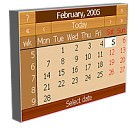

The following demos show various ways that you can configure and use the
Zapatec
DHTML calendar.
Read the
Common Features
section to learn about the features that you can try in any of the demos.
 Double Click, with Time
Double Click, with Time
This shows a basic popup calendar in which you can choose a time. The calendar closes on two clicks.
Two Month Calendar
The calendar displays two months: the current month and the next month.
Six Month Calendar
This calendar displays six months in two rows of three months.
The second month is the control month for the calendar. The control month is the month in which the default date is highlighted.
Special Days
This calendar shows special days with multiple months arranged vertically. When you click a special day in the calendar, a popup window
displays the date and the special day. The months are restricted to the period from Jan 2005 through Dec 2006.
Day of Week Selection
This flat calendar demonstrates the date-range and multiple-days-selection features.
Use the navigation buttons
("<<", "<", ">", ">>") to move to the previous or next
month or year. Keep the mouse button pressed over one of these buttons to get a drop-down
menu with a list of months/years.
Click the today button to go to today's date. Keep it pressed down to see
your last ten clicks. You can designate one of these as
your final selection.
You can click "Mo", "Su", etc. to make that day the first day of the week.
This change is persistent and will apply to other Zapatec DHTML Calendars on your site.
Use the keyboard to select
dates on most browsers. The following keys are available:
- ← , → ,
↑ , ↓ -- select date
- CTRL + ← ,
→ -- select month
- CTRL + ↑ ,
↓ -- select year
- SPACE -- go to today date
- ENTER -- accept the currently selected date
- ESC -- cancel selection
However, on Opera 7 and Opera 8.5, only the SPACE and up/down/left/right keyboard navigation shortcuts work as described above. Instead, on Opera, use CTRL + arrow as the shortcut for the Rewind and Fast Forward actions or to select multiple elements on a page.
You can drag the "status
bar" (where the tooltips show) or title bar (where the
currently selected month and year show) to move the whole calendar.